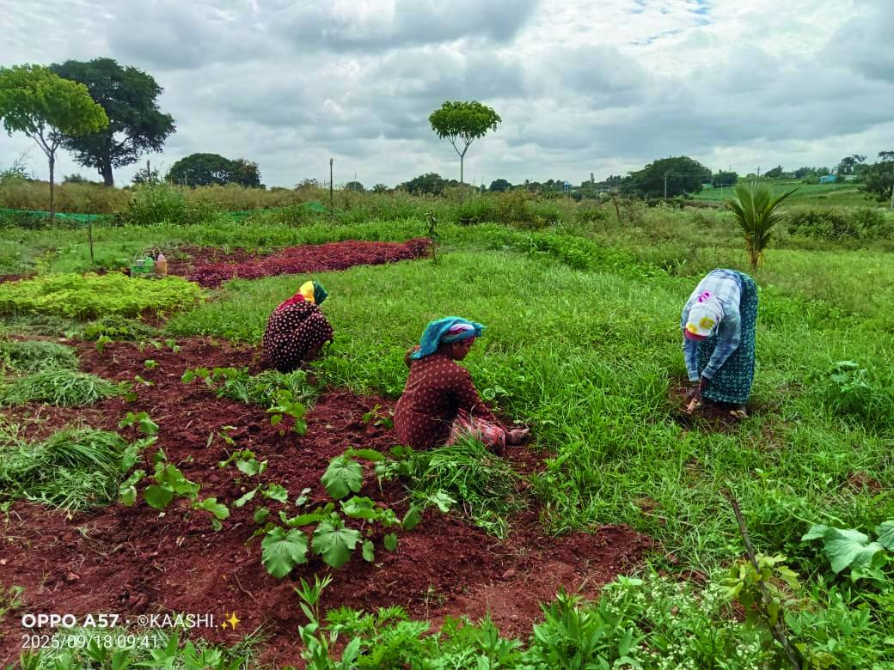
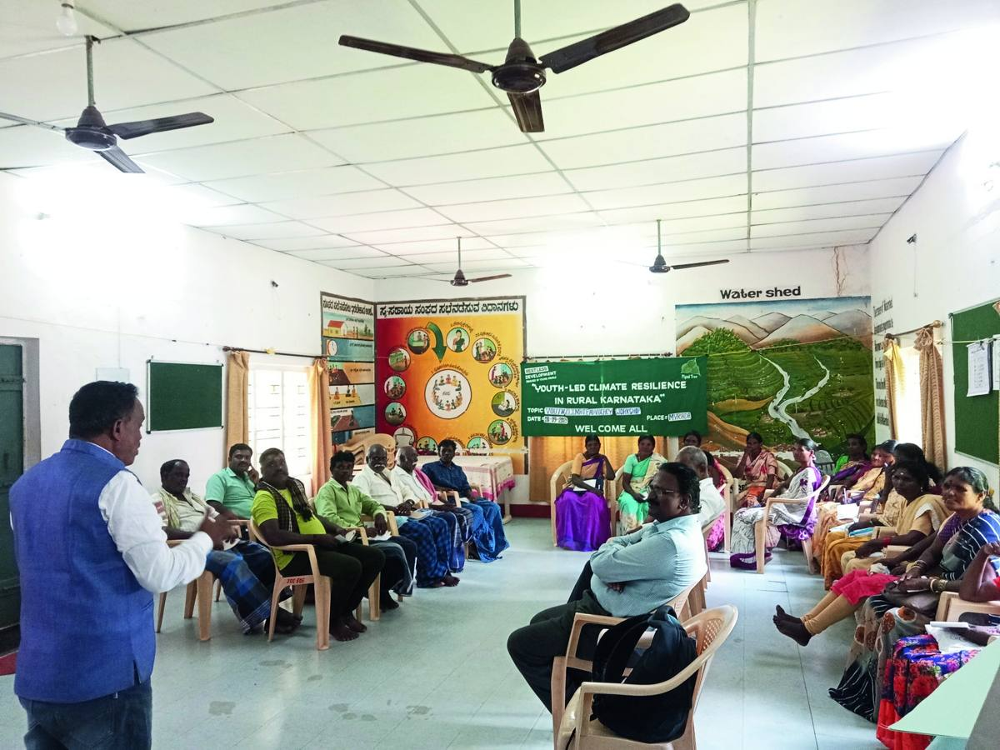
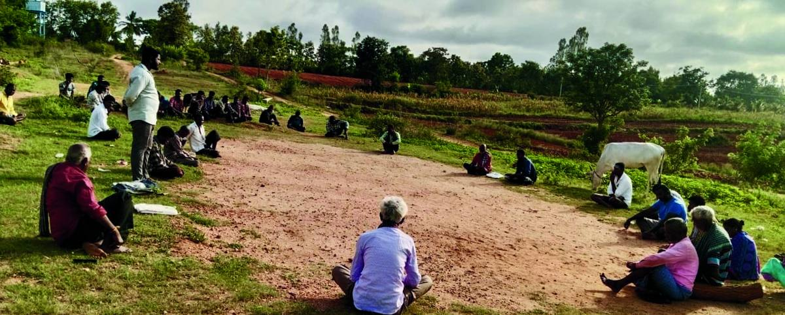

What young people were up against
Smallholder farmers in semi-arid Mysuru face climate shocks, unstable incomes and little access to technical knowledge. Many rely on mono-cropping and rarely take part in local planning that shapes their livelihoods.
What the grant made possible
Under the Building Climate Resilience through Community Participation initiative, youth facilitators ran training on organic farming, soil health, intercropping and vermicomposting, and encouraged farmers to join Gram Sabha and school development committee meetings.
Nagendra's journey
Nagendra, a 30-year-old smallholder farmer from Mahadeshwar Colony, had relied on conventional methods with low, unpredictable yields that left his family exposed to every bad season.
With continued mentoring from youth facilitators, he set up a kitchen garden, moved half an acre to intercropping and began making his own organic manure through vermicomposting. He learned about crop rotation, soil fertility and saving water. His crops became more diverse and he relied less on chemical fertiliser.
Spreading through peer learning
Nagendra now shares what he has learned with neighbouring farmers, who are starting to experiment too. Farmer field schools and peer learning are helping fill the remaining gaps in resources and technical knowledge.
“Growing crops is about caring for the soil, the water, the air, and all the living things that depend on them.”Nagendra, farmer, H.D. Kote